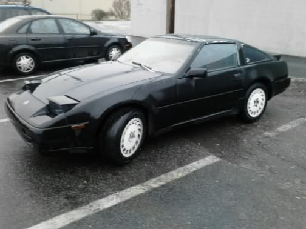

-
[quote]sporklift wrote:Inertia Switches were the root cause of many lincoln and fords being sold to back to car repair shops because they had many headaches, and Ford was very selective about who they instructed to do the simple "click" and also didn't make it very apparent in the owners manual either. Once municipalities and road/highway departments started to include speed-humps or speed-bumps in every new suburb, there were many people left with their lincoln stuck just beyond a speed bump with no way to start their car.Originally posted by zraver
The best thing to do is mount the relay in an inconspicuous spot, and if you're worried about someone fucking off with your car, just pull they relay. Heck, even give it 1 foot of wiring so that no one knows where the hell it connects to. -
I did this mod tonight and was very satisfied with the results, but after reading back over I feel one thing is amiss.
I basically just cut off my connector between the pump and harness. Then I reconnected the 12+, and ran a lead from that to the relay coil. Then I twisted the two ground sources together and ran those to the other side of the coil. I ran a ground to the body and switched side, as well as the switched side back to the pump.
It works great, I can hear the pump humming away. My only concern is that I have somehow failed to retain my safety feature. When I key on, the pump is running.
Now, My wiring system is modified, both body and EFI, so it may be a result of something I did. The cars previous owner had a penchant for running poorly secured wires across the whole car, so I was left with some cleaning up to do, and I got enthusiastic about it.
The end result as far as I can tell as it relates to this situation is that my 12+ ends up being a switched lead, not a constant. When the key is off it is not present.
That however would not affect this. Before installing the relay I had a normal 5 second prime at key on. Now it's just on. It does however sound much better, even than it did on the normal relay. It didn't phase me at first, but then after reading the thread again I feel differently.
I would like to add for those concerned about the longevity of their pumps with this mod that fords have always worked this way to my knowledge, and there pumps last as long as any other cars. The biggest issue I had with Fords and fuel pumps was relays either being weak or getting stuck on.
88 N/A GL
https://sites.google.com/site/distortionfile/
My Comedy Website. Who knows, you might laugh. -
I would like to thank Drew for this write up. The MOD worked great, my Z has never run this good! -
Did this mod today.
I think this would save those doing this mod a lot of time if the instructions were written a bit clearer, and perhaps some colours of the wires to make connections/disconnect were added to the tutorial.
I'll see how this works tomorrow when I take it for a spin. -
Hey Raff, make a better detailed schematic. You are pretty good at doing those things. I will be doing this soon.Careless wrote: Did this mod today.
I think this would save those doing this mod a lot of time if the instructions were written a bit clearer, and perhaps some colours of the wires to make connections/disconnect were added to the tutorial.
I'll see how this works tomorrow when I take it for a spin.
1986 300ZX Turbo…sold
1990 Skyline GT-R…new money pit
2014 Juke Nismo RS 6-speed…daily -
[quote]NissanEgg wrote:Thanks.Originally posted by Careless I have design job to do for someone here before I can make time to draw schematics for this circuit.
I have design job to do for someone here before I can make time to draw schematics for this circuit.
My only question regarding this is whether or not all the fuel pump wires are the same colour for each year??? Anyone know?
I did not cut any wires in my install… I simply de-pinned it from the connector and ran the ground wire the other way, and then tap-spliced into the +12 and ECU signal ground. If I ever want to wire it back to stock or test a fuel pump for operation, I would just need to take out the relay and plug the fuel pump into the main harness connection, and it will work like factory. Actually I wouldn't even have to take out the relay, but its a simple step. -
I would like to update and say that my car is indeed running better with this modification. I can attribute that to having a known boost leak, but the car isn't a complete slug anymore.
When I get my wideband installed, I may reverse the connection and do 3 logged pulls and then re-connect the unit and do 3 more logged pulls and average out my AFR's.
I believe most of what this overcomes (aside from having to attempt to tune fueling with poor granularity of the stock circuit) is that it may provided enough pressure to force any gunk in the lines or in the injectors to break free in some respect, or break it down better.
Just when I was suspecting that my fuel pump was coming up short (heck, it's 23 years old as of this month), I found this to solve the snap-throttle response where my car felt like it was wondering what to do when opening the throttle.
With my excessive backlash in my differential (being swapped to CLSD this week), it's been a good indicator of how hard the car lurches forward, as the resounding clunk has been a lot louder when stabbing the throttle. I'm just waiting hoping my differential lasts 3 more days and doesn't shit the bed before I get around to doing some swappage.
Thanks for the writeup! -
So CARELESS - can you let me know the best way to do this mod for a 85 turbo? I ask because I'm working on a swap into a 510 and my engine/tranny/ecu/fuel tank-pump were all retained from a 85t donor, and transplanted into a 510 tube chassis. It's taken me YEARS to build the tube frame, but the engine has always started and run. That said, I've had 1/4 tank or less fuel FOR SURE during this whole time, since I am pulling the tank out and in repeately for fitting/welding.
I no longer get the fuel pump hum when I turn the key - doh! And she won't "fire" now despite confirmed spark at the plug wires.
You mention that the voltage mod worked well despite the "23 year old pump"....
A few weeks ago it started and ran fine, but yesterday, no go. Yesterday, I had a fuel pump whine but she wouldn't fire up. Today, no fuel pump whine.
So I'm wanting to confirm that I have adequate FUEL. Um, I did add a few gallons of fresh 93 to the tank to be sure that wasn't the problem....
HELP ME!
Thank you all in advance for any help or well-deserved ridicule!Started with Datsuns and L engines, Mikuni carbs. Now a 1968 Datsun 510: 2200lbs, RWD, IRS, 50:50wt. f/r
spy a VG30et.. a VG30ET 510?
Tube frame "done".
12/10: Interior sheetmetal, firewall done. Fuel + brake plumbing "done". Pulled it all out again to finish the "chassis". Briefly, it drove, then back to the shop.
1/11: rotisserie built: car BELLY UP
Will now attempt an aero underbody - best keep it simple!! I have no windtunnel -
Vg30et 510 hotrod update - she runs! (well, until today). The 85t drivetrain is *stock for now - but intake and exhaust are farbricated and thus should flow better than stock. I sectioned the turbo elbow to reduce the 90-degree bend, then cleaned up the stock downpipe mounting flange and fabricated from there with 2.5" mandrel-bent, - no bend's sharper than 45-degrees were used…
Started with Datsuns and L engines, Mikuni carbs. Now a 1968 Datsun 510: 2200lbs, RWD, IRS, 50:50wt. f/r
spy a VG30et.. a VG30ET 510?
Tube frame "done".
12/10: Interior sheetmetal, firewall done. Fuel + brake plumbing "done". Pulled it all out again to finish the "chassis". Briefly, it drove, then back to the shop.
1/11: rotisserie built: car BELLY UP
Will now attempt an aero underbody - best keep it simple!! I have no windtunnel -
I just ran the relay and wires. Waiting for a filter to get here to actually drop the pump in the tank.
My issue with this is the wire coming off the ECU for the fuel pump is not JUST a ground (PIN 118 I think it was). With my test light it seemed to operate as a power and a ground depending on if the car was running or just had the ignition turned on.
I ended up wiring into the 12V source in the hatch that originally feeds the stock fuel pump, and this is what triggers my relay, and the relay is always grounded, rather than the other way around using the ECU to ground it and having 12V at the relay constantly. I do not have the 5 second prime and then turn off anymore though, its always one once the key is turned to the ON position. Not a big deal, but would be nice to retain the 5 second prime only if i ever need to have the key at the ON position for any reason. I will just pop the lead off the relay in the hatch if this is the case. -
As roastin 300 has pointed out, the wiring to the fuel pump is a little confusing. There are 3 wires all the way to the plug/connector at the pump, then 2 at the pump. Does anyone know where I could find more info on this?
I searched and only found my own thread and a few non-related ones.Started with Datsuns and L engines, Mikuni carbs. Now a 1968 Datsun 510: 2200lbs, RWD, IRS, 50:50wt. f/r
spy a VG30et.. a VG30ET 510?
Tube frame "done".
12/10: Interior sheetmetal, firewall done. Fuel + brake plumbing "done". Pulled it all out again to finish the "chassis". Briefly, it drove, then back to the shop.
1/11: rotisserie built: car BELLY UP
Will now attempt an aero underbody - best keep it simple!! I have no windtunnel -
Tell me why if i have 14ga wiring rated at 17amps, and my fuel pump will be pulling ~13.8 amps (which is 80% duty for for wire rating) i should run a 10ga or 8ga… Also having a 15amp (88% duty) inline fuse. -
Hell I would just wire 12 gauge and call it a day for peace of mind. With your set up it seems it should run fine though. I could see someone using 10ga but 8, really? lol.88sinZ wrote: Tell me why if i have 14ga wiring rated at 17amps, and my fuel pump will be pulling ~13.8 amps (which is 80% duty for for wire rating) i should run a 10ga or 8ga… Also having a 15amp (88% duty) inline fuse.Usual Z31 suspect: Garage Queen (aka broken)

-
Phuck it I already wired 8ga to + and - side of the pump, had to enlarge the wire holes in the mouting plate to feed thoes fat wired through -
Okay, going on 5 years later and I'm still not sure there was a definite agreement on what works here (or how this maybe relates to the stock wiring being undersized for some pumps, but that's off topic and elsewhere). So, I want to sum this up in one question and see if someone(s) can let me know if it will be happy since my car is in project mode and I can't exactly test, but I'm into this now for other reasons. So, please, for anyone who has been over this well enough to know for sure here is my question.
If you leave the stock fuel pump relay and wiring harness to the fuel pump alone, and cut the wire at the ECCS pin 108 and splice it into ECCS pin 20 will this provide full voltage to the pump at all times when the brain thinks it should be running (and only then)?
I'm sorry if that was said elsewhere or earlier in this thread but I'm trying to be clear. Diagrams would be great but can't do that now. I'll summarize anyway: the way I believe this worked as explained in the '86FSM and please set me straight if I'm wrong. Fuel pump is connected to fused power on hot side all the time (with key on or not I don't care). Fuel pump ground then comes either through fuel pump relay for the first 5 seconds and under some other conditions for full speed operation, or else ground comes through the ECCS varying from 9.4-full voltage to slow the pump. The stock relay is switched on by pin 20 from the ECCS on the ground side of the coil. I want to tie the other pin from the ECCS to here and leave the other end of this wire (from brain to fuel pump) cut. This way the existing relay will pull in with ground from either condition from the ECCS and all the stock wiring is intact except for one cut wire spliced into a nearby uncut wire near the ECCS. Any problems with this? I'll be running a Walbro or similar and aftermarket fuel pressure regulator.

Copyright © 2006–. All rights reserved. Privacy Policy